Leveraging historical race data, driver statistics, constructor performance, and circuit characteristics to predict Formula 1 podium finishes using ensemble classification models and advanced feature engineering.
Four critical insights from training and evaluating multiple machine learning models on F1 podium prediction.
Starting from pole position gives drivers a roughly 50% chance of finishing on the podium. Drivers starting in the top 3 grid positions capture over 80% of all podium finishes, making grid position the single most influential feature across all models.
Top-tier constructors (Mercedes, Red Bull, Ferrari) account for the vast majority of podiums. Constructor advantage outweighs individual driver talent in the feature importance rankings, highlighting that F1 remains fundamentally an engineering-driven sport.
Street circuits, permanent tracks, and hybrid layouts show distinctly different podium probability distributions. Street circuits tend to favor established teams with strong qualifying pace, while unconventional layouts occasionally produce surprise results.
Among the four models tested, Gradient Boosting (XGBoost) achieved the highest AUC-ROC score, demonstrating superior ability to capture non-linear relationships in F1 race data. SMOTE oversampling was critical for handling the inherent class imbalance in podium outcomes.
Evaluating classification models on their ability to predict podium finishes, measured by AUC-ROC.
A comprehensive visual walkthrough covering target distribution, feature analysis, model evaluation, and performance insights across constructors and circuits.
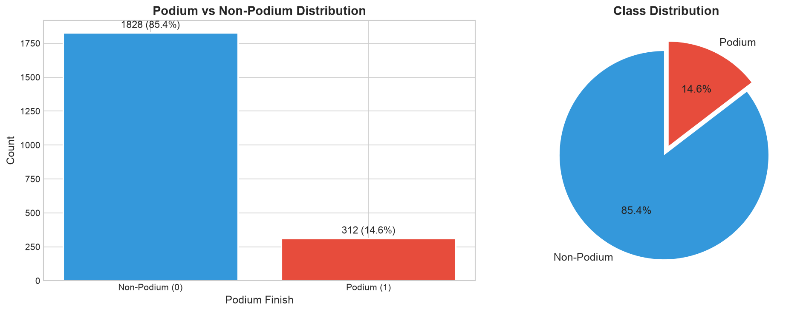
Class imbalance analysis of podium vs non-podium finishes
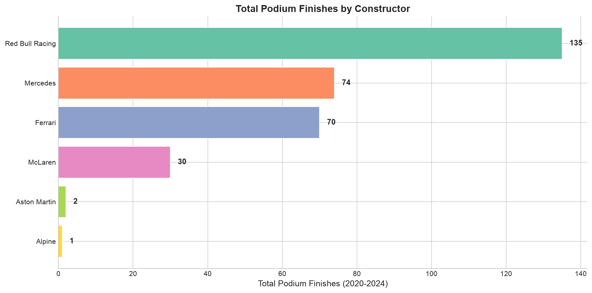
Historical podium count for each F1 constructor team
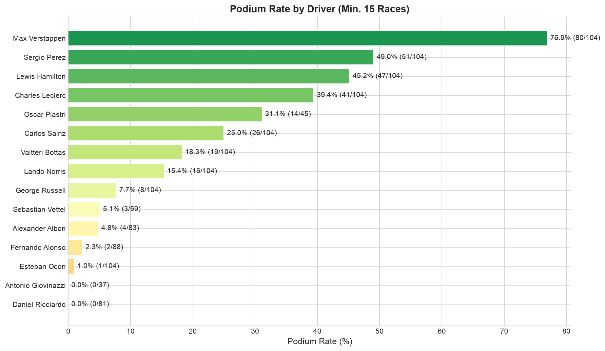
Percentage of races resulting in a podium finish per driver
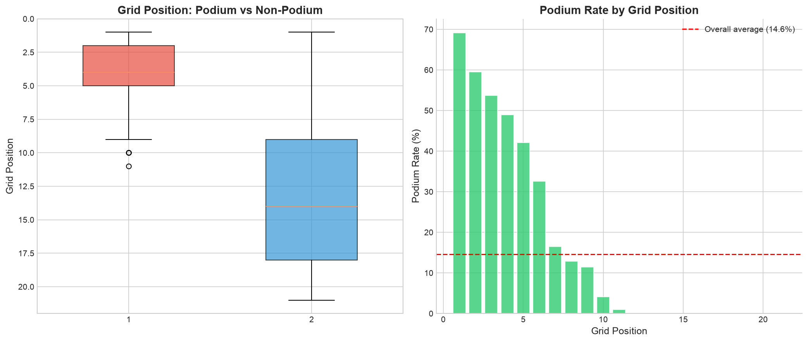
How starting position correlates with finishing on the podium
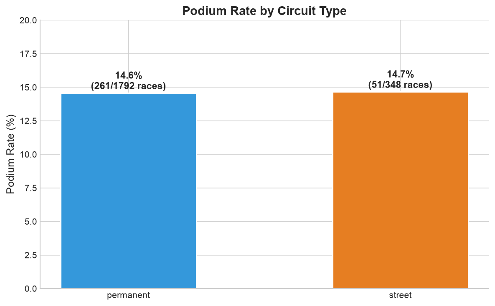
Comparing podium probability across street, permanent, and hybrid circuits
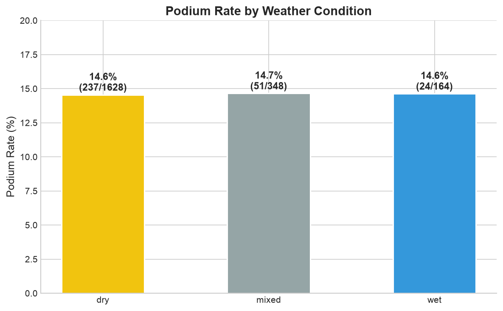
Impact of weather conditions on podium outcome distributions
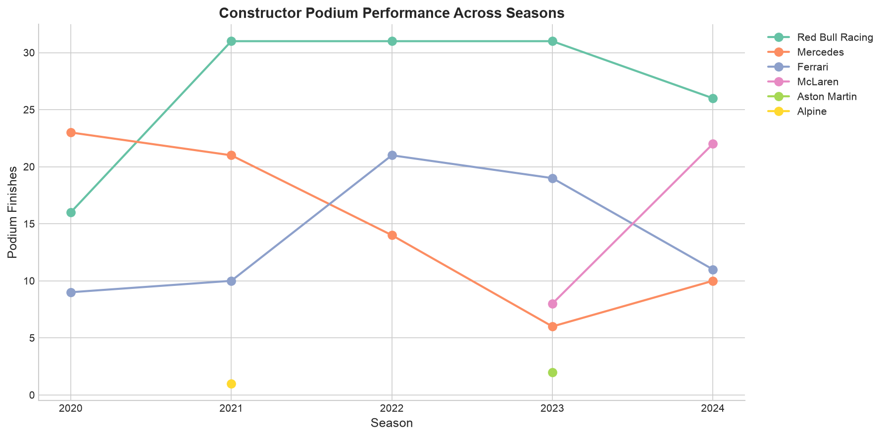
Longitudinal view of constructor competitiveness over multiple seasons
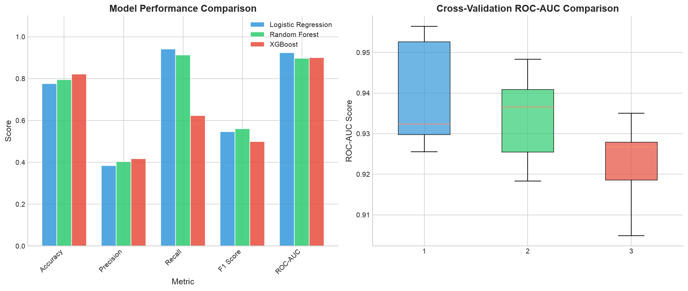
Side-by-side evaluation of classification model performance metrics
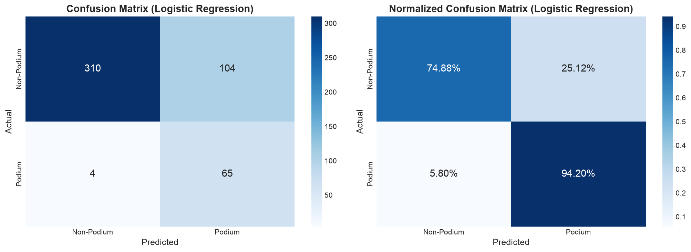
Classification error analysis for the best-performing model
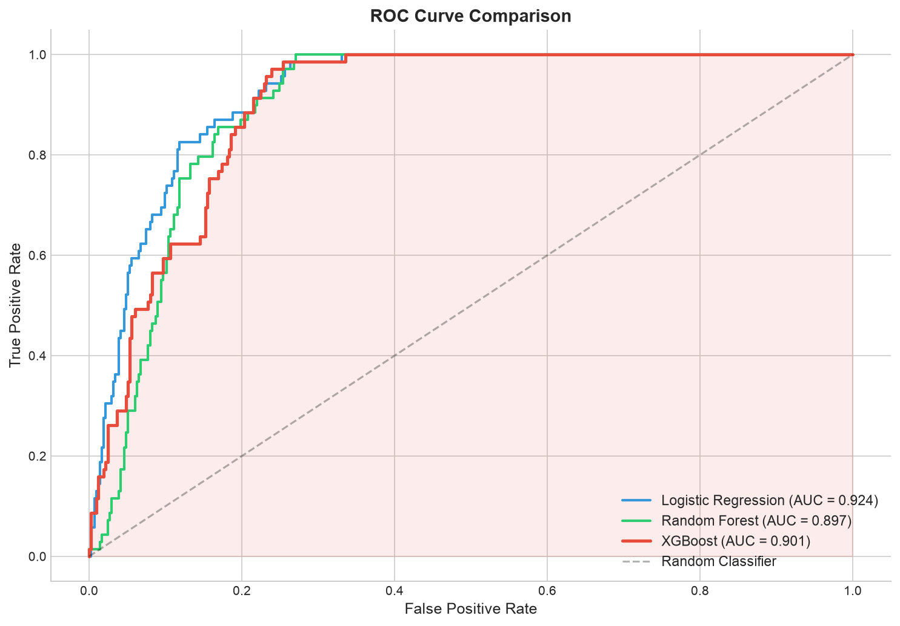
Receiver Operating Characteristic curves for all trained models
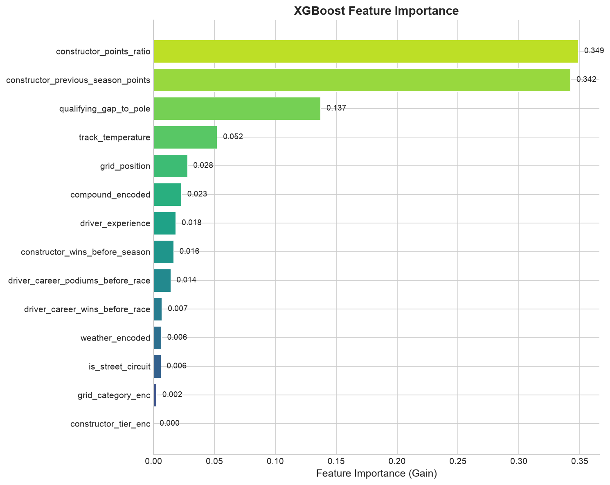
Ranking of the most predictive features for podium prediction
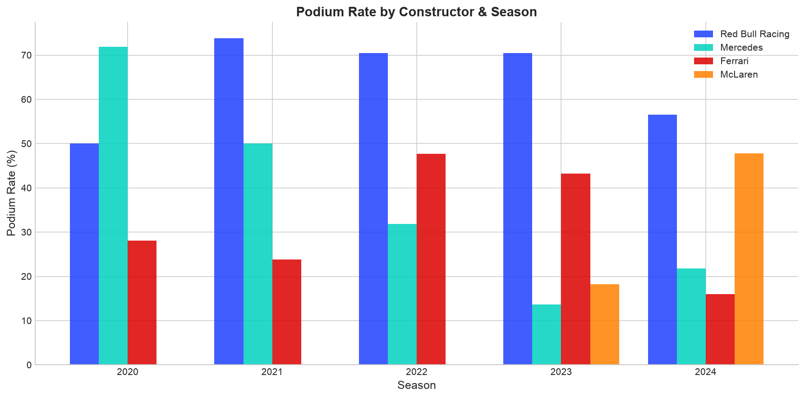
Quantifying the performance edge held by top-tier constructors
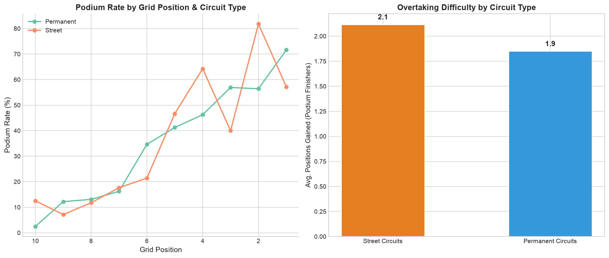
How different circuit layouts influence race outcomes and podium probability
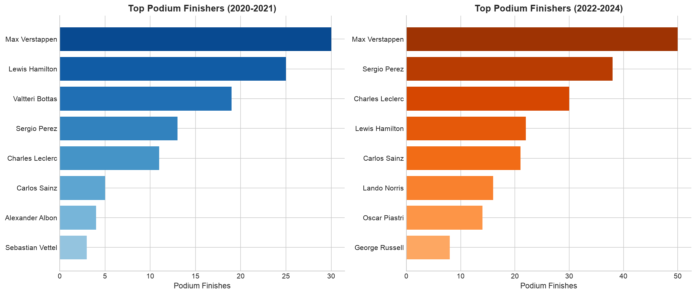
Dominant drivers and constructors across different F1 eras
An end-to-end pipeline from data collection and feature engineering through model training, evaluation, and interpretability analysis.
Engineered features from raw race data including driver form metrics, constructor historical performance, circuit characteristics, and weather conditions. Applied standard scaling and handled class imbalance using SMOTE (Synthetic Minority Over-sampling Technique).
Built a Logistic Regression baseline model for interpretable probability estimates, then trained a Random Forest ensemble for capturing non-linear feature interactions. Both models include hyperparameter tuning via cross-validation.
Implemented Gradient Boosting and XGBoost classifiers for maximum predictive power. These sequential ensemble methods proved most effective at handling the complex, non-linear relationships inherent in F1 race data.
Evaluated models using AUC-ROC, confusion matrices, precision-recall curves, and feature importance analysis. The evaluation framework ensures robust comparison across models and guards against overfitting through stratified cross-validation.
A Python-first machine learning toolkit for data processing, model training, and visualization.